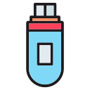

Mis habilidades
Disseny UI/UX
Creador d'interfícies d'usuaris atractives, intuïtives i funcionals. Especialitzat en què l'usuari (UX) tingui una millor experiència amb les interfícies (UI).
Desenvolupador Web
Creador de llocs web tant en el disseny (Frontend) com en el costat de servidor (Backend), mantenint una estructura única en cada lloc web.
Desenvolupador d'Aplicaciones
Creador d'aplicacions (Programari) per a dispositius mòbils i computadores d'escriptori, capaç de crear aplicacions funcionals i eficients per a satisfer les necessitats de l'usuari.
Administrador de Bases de Dades
Creador de bases de dades (DBA) especialitzat a instal·lar, configurar, mantenir i administrar bases de dades garantint seguretat, eficiència i accessibilitat per als usuaris i les aplicacions.
Els meus estudis
| Any | Institut | Estudis | Duració | Títol / Certificat | Nota mitja |
|---|---|---|---|---|---|
| 2024 - actualment | Institut TIC BCN | GS en Desenvolupament d'Aplicacions Web | 2 Anys | ||
| 2023 | Infotep Virtual | Desenvolupador d'Aplicacions Mòbils | 3 mesos | Certificat | 10 |
| 2022-2023 | Infotep | Disseny i Creació de Sistemes | 1 any | 9.2 | |
| 2015-2021 | Centro Educativo El Laurel | Educació Secundari | 6 anys | Certificat | 8.2 |
| 2009-2015 | Centro Educativo El Laurel | Educació Primari | 6 anys | Certificat | 8.6 |
Els meus projectes
| Nom del projecte | Llenguatges utilitzats | Descripció |
|---|---|---|
| Gestor de Archivos |





|
És una aplicació web que permet gestionar arxius desats en un núvol, amb un disseny semblant al de l'explorador d'arxius de windows i amb un sistema integrat que s'assembla al drive de google. |
| FryFly | És una aplicació web que permet la compra de menjar rapida, amb una rapidesa com cap altra. | |
| Preguntas y Respuestas | És un joc de preguntes amb diferents categories, a més d'un temporitzador per a respondre la pregunta i una puntuació per resposta. | |
| Prestamos Taveras | És una aplicació web que gestiona els prestem que una entitat financera ofereix als seus clients | |
| Alpha Inventory | És una aplicació web que gestiona les compres i les vendes en una botiga X, a més de l'inventari dels productes registrats. |